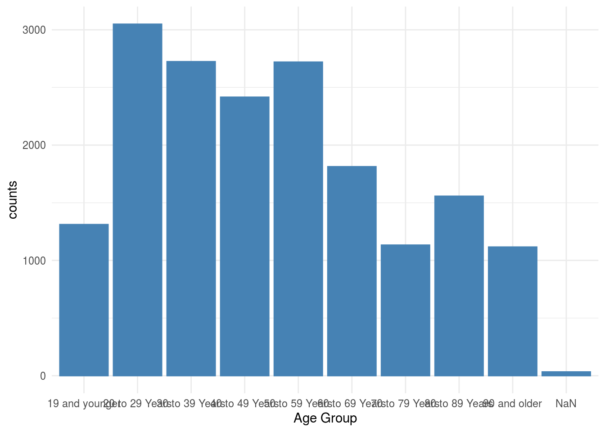
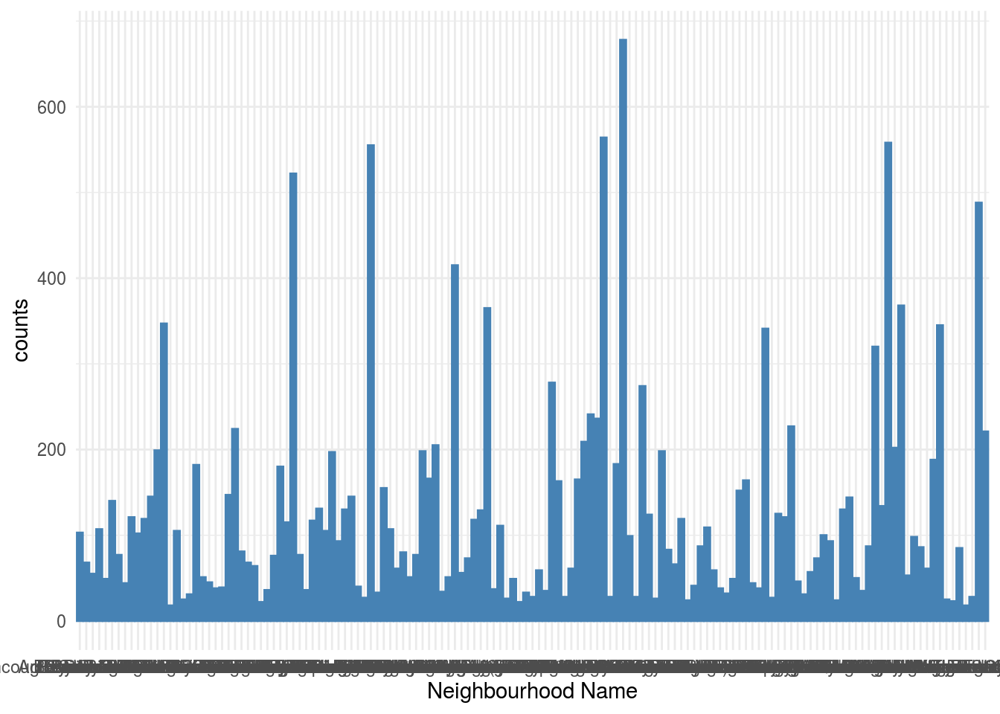
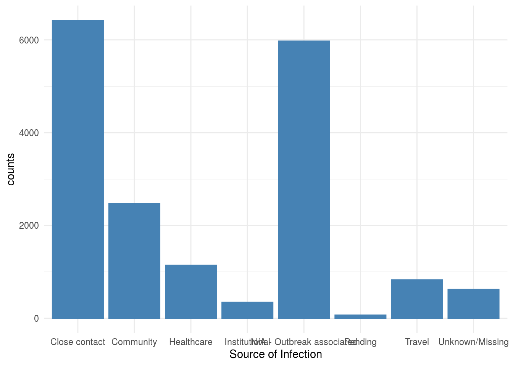

I. Abstraction
In 2020, COVID-19 outbreak hits the world, no exception for Toronto. This analysis will focus on several variables of COVID-19 cases in Toronto that people mostly concern about, based on data from Open Data Toronto.
II. Introduction
In the following context, I will use the data of COVID-19 cases in Toronto from Open Data Toronto website to discuss on several points with some graphs.
#III. Data Discussion
## Rows: 17,872
## Columns: 18
## $ `_id` <int> 143647, 143648, 143649, 143650, 143651, 1436…
## $ Assigned_ID <int> 1, 2, 3, 4, 5, 6, 7, 8, 9, 10, 11, 12, 13, 1…
## $ `Outbreak Associated` <chr> "Sporadic", "Sporadic", "Sporadic", "Sporadi…
## $ `Age Group` <chr> "50 to 59 Years", "50 to 59 Years", "20 to 2…
## $ `Neighbourhood Name` <chr> "Willowdale East", "Willowdale East", "Parkw…
## $ FSA <chr> "M2N", "M2N", "M3A", "M4W", "M4W", "M2R", "M…
## $ `Source of Infection` <chr> "Travel", "Travel", "Travel", "Travel", "Tra…
## $ Classification <chr> "CONFIRMED", "CONFIRMED", "CONFIRMED", "CONF…
## $ `Episode Date` <chr> "2020-01-22", "2020-01-21", "2020-02-05", "2…
## $ `Reported Date` <chr> "2020-01-23", "2020-01-23", "2020-02-21", "2…
## $ `Client Gender` <chr> "FEMALE", "MALE", "FEMALE", "FEMALE", "MALE"…
## $ Outcome <chr> "RESOLVED", "RESOLVED", "RESOLVED", "RESOLVE…
## $ `Currently Hospitalized` <chr> "No", "No", "No", "No", "No", "No", "No", "N…
## $ `Currently in ICU` <chr> "No", "No", "No", "No", "No", "No", "No", "N…
## $ `Currently Intubated` <chr> "No", "No", "No", "No", "No", "No", "No", "N…
## $ `Ever Hospitalized` <chr> "No", "Yes", "No", "No", "No", "No", "No", "…
## $ `Ever in ICU` <chr> "No", "No", "No", "No", "No", "No", "No", "N…
## $ `Ever Intubated` <chr> "No", "No", "No", "No", "No", "No", "No", "N…The data shows multiple types of information related to the outbreak of COVID-19 in Toronto, from January to September 23, 2020. As the data frame shows above, this data set contains 18 variables, id, Assigned_ID, Outbreak Associated, Age group, Neighbourhood Name, FSA, Source of Infection, Classification, Episode Date, Reported Date, Client Gender, Outcome, Currently Hospitalized, Currently in ICU, Currently Intubated, Ever Hospitalized, Ever in ICU and Ever Intubated. Except that id and Assigned_ID are quantitative variables, all the rest 16 variables are categorical variables.
Among these variables, I mainly concern about three things:
Age Group:
how old the ill people are when they get infected.
Neighbourhood Name:
among 140 geographical distinct, which neighbourhood most infected people live.
Source of Infection:
how most people get infected, for example, travel, close contact with a case, institutional setting, healthcare setting, community or pending, unknow.
IV. Graph Analysis
- Age Group
## `summarise()` ungrouping output (override with `.groups` argument)
- Neighbourhood Name
## `summarise()` ungrouping output (override with `.groups` argument)
- Source of Infection
## `summarise()` ungrouping output (override with `.groups` argument)
reference
We use Wickham et al. (2019) We use (???)
Wickham, Hadley, Mara Averick, Jennifer Bryan, Winston Chang, Lucy D’Agostino McGowan, Romain François, Garrett Grolemund, et al. 2019. “Welcome to the tidyverse.” Journal of Open Source Software 4 (43): 1686. https://doi.org/10.21105/joss.01686.